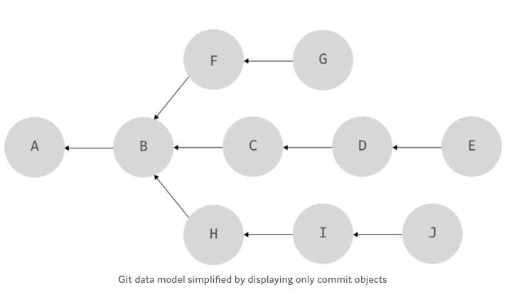
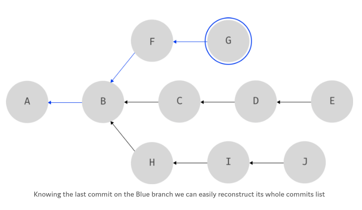

Understanding git branch
Introduction
- Hi guys! Trước khi bắt đầu với git's branch. Mình nghĩ chúng ta nên có một sự hiểu biết nhất định về git's data model. (nếu bạn muốn có một bài dịch cho đường link đó vui lòng thông tin cho m :D ).
- Còn đây là nhận xét từ git scm về lợi ích việc hiểu git branch: "Understanding and mastering this feature (git's branch) gives you a powerful and unique tool and can entirely change the way that you develop."
Git's branch
- Cùng hình dung chúng ta có 1 đồ thị lịch sử các commit như dưới:

- Khá dễ dàng để nhận ra chúng ta có 3 branch: RED(A,B,C,D,E), BLUE( A,B, F ,G), GREEN(A,B,H,I,J)

- Nhìn có vẻ như chúng ta có thể định nghĩa branch: Tập các commit mà branch đó chứa (RED: A,B,C,D,E). Tuy nhiên đó ko phải cách git đang làm. Git sử dụng một giải pháp đơn giản, hiệu quả hơn. Thay vì phải có danh sách tất cả các commit thuộc về một branch, và giữ cho danh sách này được cập nhật, git đơn giản chỉ cần để mắt tới commit cuối cùng trên branch đó. Khi biết commit này việc tạo lại danh sách các commit của branch bằng cách lần theo hướng đồ thị khá đơn giản.
- Cho ví dụ như branch BLUE, chúng ta chỉ cần biết commit G cuối cùng. Và nếu chúng ta cần danh sách commit của branch BLUE chúng ta có thể theo hướng đồ thị bắt đầu từ G để tìm ra:

- Đó là cách git quản lý các branch bằng cách giữ con trỏ tới các commit. Cùng làm ví dụ để hiểu rõ hơn.
In action
- Đầu tiên chúng ta khởi tạo một repository
- Cùng xem folder
.git
- Cùng để ý tới folder
refs. Nó viết tắt củareferncesvà đó cũng là nơi git lưu trữ các con trỏ của branch. - Chúng ta chưa commit gì cả, bởi vậy
refschống rỗng, cùng thay đổi nó nào, bằng cách tạo và commit một vài file.
- Cùng kiểm tra xem chúng ta đang ở đâu với
git branch:
- Điều này có nghĩa chúng ta đang ở nhánh master(nguyên nhân do git tạo tự động dựa trên lần commit đầu tiên của chúng ta).
- Giờ hãy cùng kiểm tra lại
.git/refs:
- Để ý
mastertrong folderrefs/headsrất giống branch chúng ta :D. Cùng kiểm tra nội dung của nó nào:
- Và nếu chúng ta check log:
- Đây là phần đầu của output:
- YEAH! Bạn thấy đó. Một branch trong git đơn giản chỉ là một file chứa checksum của commit cuối cùng trên branch đó. Hay đơn giản: một con trỏ tới một commit :D.
- Nếu chúng ta tạo và checkout ra một branch mới và kiểm tra thư mục
.git/refs
- Giờ chúng ta có thêm
feature. Và kiểm tra checksum(pointer) nào:
- Do chúng ta không có thêm commit nào trên nhánh này nên cả
featurevàmasterđang trỏ tới cùng một commit. -
Đó là cách nhanh gọn và hiệu quả mà git tạo ra một branch: tạo một text file và cập nhật vào nó với checksum của commit hiện tại.
-
Một câu hỏi đặt ra, chúng ta đang có 2 branch, làm thế nào git biết chúng ta đang checked trên branch nào? Có một con trỏ đặc biệt hơn một chút
HEAD. Nó đặc biệt vì nó thường không trỏ tới một object commit, nhưng trỏ tớiref(branch)và git dùng nó để theo dõi branch nào hiện tại đang được checkout. -
Nó ở đây nè:
- Thử chuyển branch để kiểm tra lại nhé:
- Như bạn thấy đó giờ HEAD chuyển qua master.
- Chỉ đơn giản vậy thôi, nhưng lại khá quan trọng cho chúng ta để hiểu các hoạt động của git khi thao tác trên đồ thị các branch này (như merge, rebase, checkout, revert...).